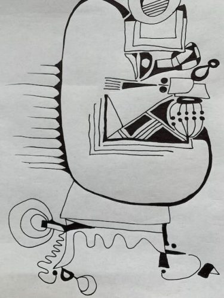
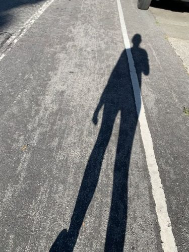

About
I am a photographer, technologist and social practice artist based in San Francisco. Working in community, I hope to merge personal and political narratives to trace the nuanced boundaries of the self, as it bleeds into cultural identity, the city and the land, and technology.
To say hi, email Lizzy.Brooks at gmail.

